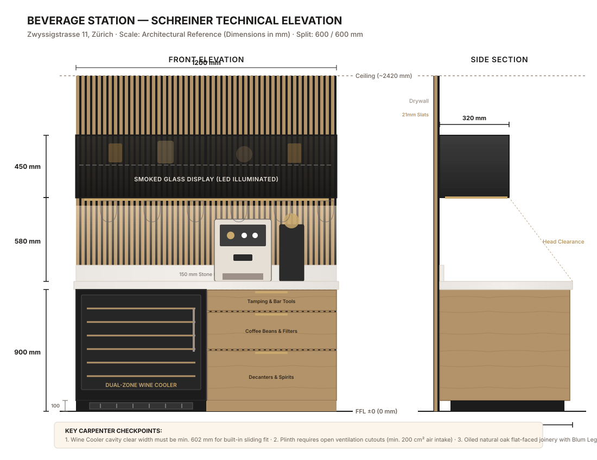

Einbau-Getränkestation (Kaffee & Bar Konsole) · 1200 mm Nische
Massgeschneiderte 1.20 m Getränkestation ("Day-to-Night"): Am Morgen professionelle Espressostation auf pflegeleichtem Quarzstein, am Abend beleuchtete Weinbar mit unterbaufähigem Weinkühler, Gläserhängeschienen und Rauchglas-Vitrinenoberschrank.
| Bauteil | Masse (B × T × H) | Funktion / Spezifikation |
|---|---|---|
| Gesamt-Nischenmass | 1200 × 600 × ~2420 mm | Volle Raumhöhe bis Decke, vertikale Eichen-Akustiklamellen auf schwarzem Filz |
| Arbeitsplatte (Countertop) | 1200 × 600 × 20 mm | Arbeitshöhe 900 mm OKFF. Quarzkomposit / Dekton matt, 150 mm Rückwand-Aufkantung |
| Modul Links (600 mm) | 600 × 585 × 825 mm | Nische für unterbaufähigen 2-Zonen-Weinkühler (z.B. Liebherr / Swisscave / Miele) |
| Modul Rechts (600 mm) | 600 × 580 × 800 mm | 3 Schubladen mit Vollauszug (Blum Legrabox): Tools (130 mm), Bohnen (240 mm), Flaschen (410 mm) |
| Oberschrank (Display) | 1200 × 320 × 450 mm | Schwarze Alurahmen-Glastüren mit 4 mm ESG Rauchglas, LED-Warmtonbeleuchtung (2700K) |
| Gläserhalter (Undermount) | 5 Schienenreihen | Messing gebürstet, bündig unter Oberschrank montiert für Stielgläser (kopfüber) |
| Sockel | Höhe 100 mm | Mit integriertem schwarzen Lüftungsgitter links (min. 200 cm² Querschnitt) |
Frontansicht & Seitenprofil · 600 / 600 mm Aufteilung

| Komponente | Material / Ausführung | Hersteller / Modell |
|---|---|---|
| Fronten Schubladen | Echtholzfurnier Eiche natur, stumpf gefügt, matt geölt | Passend zu OAKO Eichen-Schreibtisch |
| Korpus Innen | 19 mm Spanplatte melaminbeschichtet Anthrazit / Tiefschwarz | Egger U999 oder ähnlich |
| Schubkastenführungen | Vollauszug mit integrierter Dämpfung (Blumotion) | Blum Legrabox pure, Schwarz matt |
| Griffe | Diskrete Griffleisten oder gefräste Griffmulden Messing gebürstet | Profilgriff Messing matt |
| Rückwand | Akustik-Lamellenpaneel Eiche (27×12 mm Lamellen auf 9 mm Filz schwarz) | Woodppl / Akuwood oder werkseitig gefertigt |
| Vitrinenrahmen | Schlankes Aluminiumprofil, schwarz matt eloxiert | Alu-Systemrahmen 20 mm |
| Vitrinenverglasung | 4 mm ESG Einscheiben-Sicherheitsglas, grau getönt (Rauchglas) | Rauchglas grau/bronze |
| LED-Beleuchtung | LED-Band 24V COB, 2700K warmweiss, CRI >90 in Alu-Einbauprofil opal | Tastdimmer unsichtbar unter Oberschrank |